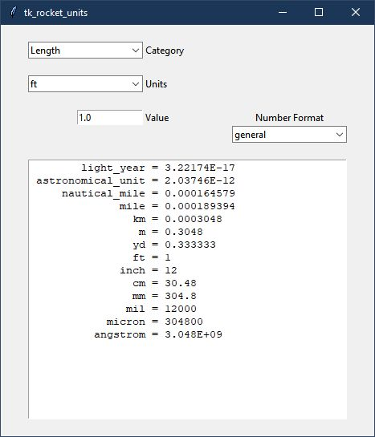

QuickStart¶
Install RocketUnits¶
The easiest way to install RocketUnits is
pip install rocketunits
OR on Linux
sudo pip install rocketunits
OR perhaps
pip install --user rocketunits
In case of error, see pip Error Messages
Installation From Source¶
Much less common, but if installing from source, then
the best way to install rocketunits is still pip.
After navigating to the directory holding RocketUnits source code, do the following
cd full/path/to/rocketunits
pip install -e .
OR on Linux
sudo pip install -e .
OR perhaps
pip install --user -e .
This will execute the local setup.py file and insure that the pip-specific commands in setup.py are run.
Running RocketUnits¶
After installing with pip, there will be a launch command line program called
rocketunits or, on Windows, rocketunits.exe.
From a terminal or command prompt window simply type
rocketunits
and RocketUnits GUI (tk_rocket_units) will start.
If it does not start, then there may be an issue with your system path. The path for the rocketunits executable might be something like
/usr/local/bin/rocketunits (if installed with sudo pip install -e .)
or
/home/<user>/.local/bin/rocketunits (if installed with pip install -e .)
or
C:\Python37\Scripts\rocketunits.exe (on Windows)
Make sure your system path includes the above path to rocketunits.
Stand-Alone EXE¶
If desired, the RocketUnits GUI can be run as a stand-alone executable (EXE) file that DOES NOT require python to be installed on the machine. (see Windows EXE Download)
This is made possible though the use of the pyinstaller project. (see documentation).
The Windows EXE file on the RocketUnits Github page was created with python 3.7 64 bit version.
You can place the executable anywhere in your system PATH or create a desktop shortcut .
There is also a Windows batch file "build_pyinstaller_EXE.bat" that shows the required pyinstaller command to create a platform-compliant executable using pyinstaller. (visit pyinstaller for install instructions).
From a console, navigate to the RocketUnits install directory and give the following command.
pyinstaller --onefile --noconsole --icon=black_gauge.ico tk_rocket_units.py
To find the install directory, an interactive python session like the following will display the location.
C:\>python
Python 3.7.4 (tags/v3.7.4:e09359112e, Jul 8 2019, 20:34:20) [MSC v.1916 64 bit (AMD64)] on win32
Type "help", "copyright", "credits" or "license" for more information.
>>> from rocketunits import rocket_units
>>> rocket_units.__file__
'D:\\python37_64\\Lib\\site-packages\\rocketunits\\rocket_units.py'
>>>
For the above result, navigating to that location would then be the following command. (your command would differ)
cd D:\\python37_64\\Lib\\site-packages\\rocketunits
pip Error Messages¶
If you get an error message that pip is not found, see
https://pip.pypa.io/en/latest/installing.html for full description of pip installation.
If you give up on installing with pip,
you might also try downloading the rocketunits source package
(and all dependency source packages)
from PyPI and installing from source as shown above at
Installation From Source